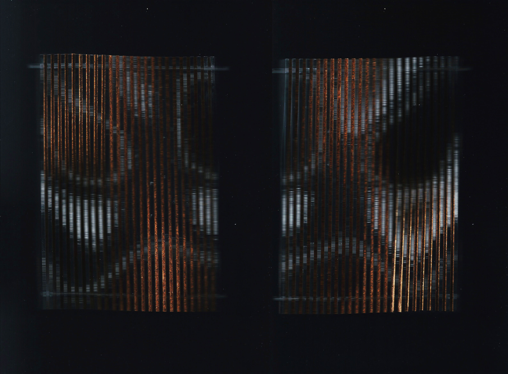
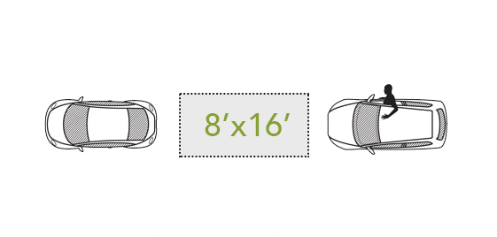
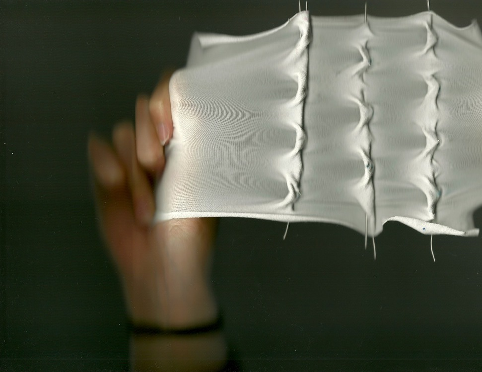
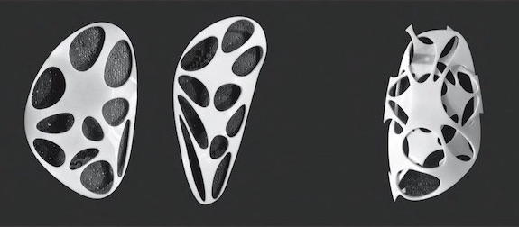

jacq
ueli
newu
INDEX
ABOUT
FILTER
+ digital
+ physical
+ thought
intangible energies in spatial interactions
digital distillation of binary landscapes
guerilla tactics to reclaim the streets
biomimetic studies in pneumatic systems
alternative models of collective learning space